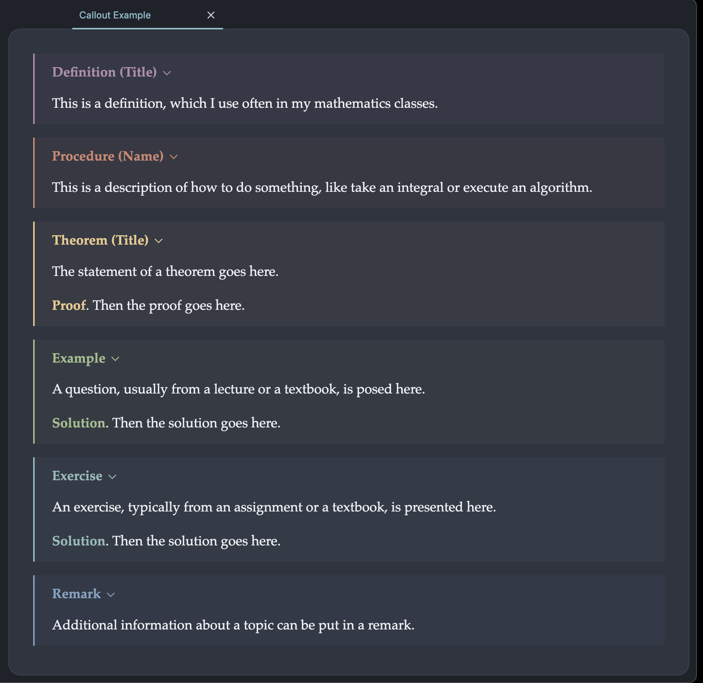
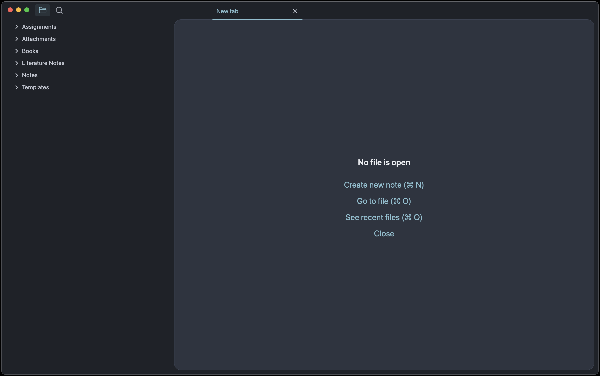

This is a follow up to my previous two posts about Obsidian, How I Take Notes and Fast Typesetting with Obsidian LaTeX Suite. Today, I take a deep dive into how I’ve used Obsidian throughout my undergraduate degree to take notes in my mathematics, computer science, and statistics classes. The systems I outline in the subsequent sections are specifically tailored for university students in a STEM major, although the plugins and techniques I use are applicable to a wide variety of knowledge management use cases.
Prerequisites: This article assumes proficiency with Obsidian and familiarity with the Obsidian LaTeX Suite plugin. Some experience with CSS may be helpful for the section on custom callouts.
Disclaimer: If you’re just getting started with Obsidian, I’d recommend you save this post for later. Your configuration is something that should be built based on your needs and your preferences, not copied from some random person on the internet. The topics I discuss won’t be useful for everyone, and you won’t be able to determine what is relevant to you until you are more familiar with Obsidian.
Custom Callouts
A Callout is one of the ways Obsidian allows you to embed a block of content within a note. Callouts support all of the regular Obsidian features, including math mode, image embedding, and code snippets. Additionally, callouts support folding, just like headers. By default, Obsidian callouts have names like “Note”, “Info”, “Todo”, and “Tip”. These callouts come in handy occasionally, but they often aren’t the best fit for the notes I take as a STEM student. Here’s how I made callouts better.

Much better, right? In the rest of this section, I’ll provide a step-by-step explanation of how to create and use custom callouts in Obsidian. In order to create a new callout or change an existing one, you’ll need to add a custom CSS file to your Obsidian vault. To do this, begin by opening your file manager and navigating to the root of your vault. Then, make sure to show hidden folders (CMD SHIFT . on MacOS). After doing this, you should see a .obsidian folder with a snippets folder inside it (if the snippets folder doesn’t exist, just create it). Then, open the snippets folder and create a file called callouts.css. In order to actually use the callouts you’re about to create, you’ll need to open your Obsidian settings, navigate to the “Appearance” section, scroll down to “CSS Snippets”, and enable callouts.css.
To create a callout, add the following block of CSS code to callouts.css:
.callout[data-callout="NAME"] {
/*
Add CSS attributes to your callout here.
These can include background colours, borders,
padding, and anything else your heart desires!
*/
}I personally find the callout icons annoying, so I remove them for all of my callouts using the line .callout-icon {display : none;}. You can also change the styles of the .callout-title, .callout-title-inner and .callout-fold classes to further customize your callout. While doing this customization, its helpful to know that Obsidian is technically an instance of a web browser, which means you can open the developer console (CMD OPTION I on MacOS) to see which CSS classes apply to each element. Obsidian also live-reloads the stylesheets in the snippets folder, which means you can view changes to your callouts without having to restart Obsidian!
If you want to nerd out and customize Obsidian beyond what I discuss here, you might want to look at the complete list of CSS variables here. If you don’t want to write your own CSS, I’ve included the styles for my “Definition” callout, with documentation, below.
/* These styles apply to all of my callouts */
.callout-icon {
display: none; /* Remove the callout icon */
}
.callout-title {
padding-top: 0.5em /* Reduce the padding above the title */
}
/* These styles just apply to the "Definition" callout */
.callout[data-callout="definition"] {
/* Create a straight border on the left side of the callout */
border-radius: 0px;
border-left: 2px solid rgb(180, 142, 173);
/* Adjust the padding around the content */
padding: 5px 15px 5px 15px;
/* Set the background colour, and set opacity to 5% */
background-color: rgba(180, 142, 173, 0.05);
}
/* Change the colour of the inner title and fold button */
.callout[data-callout="definition"] .callout-title-inner {
color: rgb(180, 142, 173);
}
.callout[data-callout="definition"] .callout-fold {
color: rgb(180, 142, 173);
}Note: The colours for my callouts come from Nord, which ensures they match my Obsidian theme. I talk more about configuring Obsidian’s appearance in the final section.
At this point, you should be able to open Obsidian and create a new custom callout using the following markdown code. If you followed the instructions correctly, this callout should have all of the CSS attributes you specified in the previous step.
>[!NAME] Title
>Content This is pretty awesome, but we can make callouts even better by using plugins to create them in just a few keystrokes. I do this by using the Obsidian LaTeX Suite plugin, which also works for general purpose text expansion. If you need a refresher on how to use this plugin, I wrote a guide on it here. As an example of how to set up a snippet for creating a custom callout, I have included the code for generating my “Theorem” snippet below:
{
trigger: "!thm",
replacement: ">[!theorem]+ Theorem $0 ($1)\n>$2\n>\n><span style=\"color: rgb(235, 203, 139)\"><b>Proof</b></span>. $3",
options: "tA"
},I activate this snippet by typing the trigger phrase !thm. The options tA means that this snippet activates in text mode (as opposed to math mode) and Autocompletes without me having to press TAB. In the replacement, I use $0, $1, $2, and $3 to place tabstops, which allow me to quickly jump from one location in the callout to the next. Adding \n inserts a new line. The replacement ends up being quite long because I have to manually embed the colour of “Proof” subheader in the snippet using a <span> It would be nice if there was a way to create a custom callout with additional HTML – if anyone knows how to do this please let me know.
That’s all for this section. Like many of the other plugins and techniques I discuss in this post, Obsidian \(\LaTeX\) Suite and custom CSS snippets are general purpose tools for improving your note taking workflows, and have tons of applications beyond what I’ve shown here.
Templater & Dataview
Custom callouts are a good party trick, but how do they fit into a bigger system? I see my callouts as the building blocks for concepts, which represent a complete idea. As an example, consider the Chain Rule as taught in a typical Calculus I course. My note on this concept consists of a definition callout, followed by a theorem callout, followed by a couple of example callouts. All of these callouts are stored in a single note, titled “Chain Rule”. The other type of note I keep are exercises, which contain textbook questions or assignment problems that I’ve solved myself. I currently have hundreds of these notes, which can make organizing them a daunting task. As my vault has grown larger, I’ve actually abandoned the concept of folder-based organization entirely in favor of more organic solutions that use metadata and bidirectional linking. The Templater and Dataview plugins are essential to this workflow.
Obsidian stores metadata in an optional YAML header within each file. Within this header, you can define any number of properties in a wide variety of data formats like words, numbers, and lists. I use metadata to store the following information in my concept and exercise notes respectively:
---
concept: true
course: ...
subject: ...
topics:
- ...
- ...
- ...
------
exercise: true
source: ...
chapter: ...
number: ...
---Lets breakdown exactly how these YAML headers work. Adding concept: true and exercise: true make it easy to search my vault for all concepts or exercises respectively. In each concept note, I store the most recent course in which I studied the concept, which comes in handy when preparing for exams. The subject and topics fields allow me to list additional keywords which make it easier to index the note later. In each exercise note I store the source of the exercise (i.e. the textbook it came from) as well as its chapter and number, if they exist.
Now that we’ve done all of this hard work adding metadata to our notes, we can reap the benefits by using the Dataview plugin to query our entire vault. I’m not going to go into detail about how to write dataview queries, since plenty of good documentation exists already. I will however give examples of some of the queries I am currently using in my vault as well as a brief description of what they do and how they work.
1: Create a table of all notes with the subject “Statistics”, then sort by the time I created the note so that the newest concepts appear the top.
TABLE join(topics, ", ") AS Topics
WHERE concept AND subject = "Statistics"
SORT file.ctime DESC2: Create a list of all exercises that contain a link to this concept note.
LIST
FROM [[]]
WHERE exercise
SORT source, chapter, number3: Create a table of all concepts from the course “MATH302” that were created in the last month (to study for a quiz, for example).
TABLE join(topics, ", ") AS Topics
WHERE concept AND course = "MATH302"
WHERE file.ctime <= date(today) - dur(1 month)This is all lots of fun, but creating metadata can be a lot of work. The Templater plugin makes things faster by allowing us to create custom templates for the concept and exercise notes. In case you were wondering, Templater can do way more than this by allowing you to execute arbitrary Typescript code from within your vault, but we’ll just focus on the templates for now. Creating templates is really simple; just define a Templates folder in the Templater settings menu and then create a new note within this folder. Within these templates you can include any amount of markdown content and YAML metadata. Additionally, you can use the variable <% tp.file.cursor() %> to add a tabstop. Once your happy with your templates, I would advise you to create hotkeys for importing them, which can be done from the Templater settings.
For your inspiration, I have included the templates for my concept and exercise notes below. I populate my concept notes with a dataview query for finding all exercises that involve this concept (see above), as well as a YAML header. Exercise notes also include a YAML header, with the source of the exercise automatically inferred from the title of the note.
---
concept: true
course: <% tp.file.cursor(1) %>
subject: <% tp.file.cursor(2) %>
topics: <% tp.file.cursor(3) %>
---
<% tp.file.cursor(4) %>
## Exercises
```dataview
LIST
FROM [[]]
WHERE exercise
SORT source, chapter, number
```---
exercise: true
source: <% tp.file.title.split(" ")[0] %>
chapter: <% tp.file.cursor(1) %>
number: <% tp.file.cursor(2) %>
---
<% tp.file.cursor(3) %>That’s all for this section. There is so much more to Dataview and Templater than I’ve shown here. If you’re interested in integrating these plugins into your vault, I’d recommend you start by reading through their excellent documentation.
Excalidraw
An iPad, Apple Pencil and Goodnotes seems to be the standard way of taking notes for many of my classmates. This method has its benefits and drawbacks when compared to Obsidian. The biggest drawback is that writing text by hand is slow – about five times slower for me, but your mileage may vary. However, Goodnotes makes it super easy to add figures, drawings, and sketches to your notes, something that vanilla Obsidian struggles with. But not all is lost. By using the Excalidraw plugin, we can create and edit figures from within Obsidian!
Before I continue, I think its important to mention that Excalidraw is not a general-purpose drawing program like Inkscape or MS Paint. Excalidraw is a sketching application – it even introduces sloppiness into its lines in order to produce a hand-drawn feel. This makes Excalidraw excellent for doing quick drawings, but renders it unsuitable for creating more precise or serious images.
The rest of this section contains three quick tricks that have made Excalidraw more productive for me. I wish I could provide a more in-depth guide to this plugin, but I honestly don’t have the expertise to do that. If you’re interested in learning more, the author of the plugin has created hundreds of tutorials, which you can find on his YouTube channel here.
1: By using ![[...]] you can embed an Excalidraw image directly in a note without having to export it to a .png file. By adding |100 to the inside of the hyperlink, you can resize the image to 100px (or any other size). This technique also works for images that weren’t made with Excalidraw. I also prefer images to be centered in my notes, which I accomplish using the following CSS snippet:
img {
display: block;
margin-left: auto;
margin-right: auto;
}2: I use Obsidian and Excalidraw in dark mode, but sometimes I need to export my figures with a white background. To achieve this functionality, open the settings for the Excalidraw plugin, click “Embedding Excalidraw into your Notes and Exporting, then”Export Settings”, then “Auto-export settings”, then “Export both dark- and light-themed images”.
3: I use the default hotkeys within Excalidraw in addition to some custom ones. You can find a list of active hotkeys in the “Hotkeys” section of Obsidian’s settings. I’ve created shortcuts to import \(\LaTeX\) equations, create a new drawing, and import a drawing.
I don’t add many figures and sketches to my notes, maybe 2 or 3 each week. However, when I do need to sketch something out, Excalidraw has always worked great for me. From what I can tell, the Excalidraw plugin has an insane amount of functionality. It might be just as fast as using an iPad with Goodnotes. I’d love to hear from anybody who has used this plugin for more serious use cases, so if this sounds like you, please reach out!
Zotero Integration
Zotero Integration is a handy plugin for importing information from a Zotero library into an Obsidian vault. It also allows you to import PDF annotations from Zotero into Obsidian, a feature I don’t use myself. I primarily use Zotero integration for the literature notes feature, which allows me to create a note in Obsidian which contains information about an academic paper. This information is stored in the metadata and can include details such as the title, authors, year, abstract, and DOI. I use links to literature notes as an “in-text citation” system within my vault that gives me easy access to the papers I’m thinking about.
To get this system set up, add a new template to Zotero Integration titled “Literature Note”. I set the output path to Literature Notes/{{citekey}}.md which gives each literature note a name based on its Zotero citekey and moves it to the Literature Notes folder. Then, create a template file (I called mine literature-note) and specify it in the Zotero Integration settings. Here’s my template file:
---
year: {{date | format("YYYY")}}
tags: {% if allTags %}{{allTags}}{% endif %}
DOI: {{DOI}}
authors: {{authors}}
url: {{url}}
bibliography: {{bibliography}}
---
**{{title}}**
{{pdfZoteroLink}}
# Notes
{% persist "notes" %}
{% endpersist %}This template automatically includes the year, tags, DOI, authors, URL, and bibliography in the metadata. The {% persist "notes" %} and {% endpersist %} delimiters are essential to prevent the content of the literature notes from being deleted if the same paper is imported again. To actually create a new literature note, use the command Zotero Integration: Import notes from the command palette, or bind a hotkey in your Obsidian settings.
Limitations: Using the Zotero Integration plugin tempted me to try to turn Obsidian into a fully-fledged environment for writing an academic paper, replete with support for citations, exporting via Pandoc, and various environments for handling figures. I got close but I ultimately couldn’t get things to work as well as native \(\LaTeX\), which I edit using Neovim.
Bonus: Minimalist Obsidian
This section is all about my personal preferences for making Obsidian look pretty. In general, I believe in keeping my Obsidian as minimalist as possible. I’m serious about this. When I first open Obsidian, here’s what I see:

The easiest way to remove all the unnecessary buttons, toggles, and icons is to use the Hider plugin. Any elements that aren’t included in this plugin can be hidden using a CSS snippet (see the section on custom callouts). The theme I use is Nord Dark from Anupuccin, with some additional changes to the typography. I personally find the default headers in Obsidian to be unreasonably large, so I use the Style Settings plugin to make them smaller. I also prefer serif fonts (they’re easier on the eyes), so I replaced the default font SF Display with Palatino, which I think is quite beautiful. There’s definitely some more little things I’ve done over the years to improve Obsidian’s appearance, but these are the ones I can remember off the top of my head.
Conclusion
Customizing your vault with CSS snippets, plugins, and various other shenanigans can be both exciting and rewarding. I’ve probably spent upwards of 20 hours fine-tuning my Obsidian setup to be practical, fast, and most importantly, fun. While a lot of people say that configuring software like Obsidian and Neovim is a waste of time, I say that if you’re going spend your life learning and building, you might as well do it in an environment that is pleasant for you. Thanks for reading.